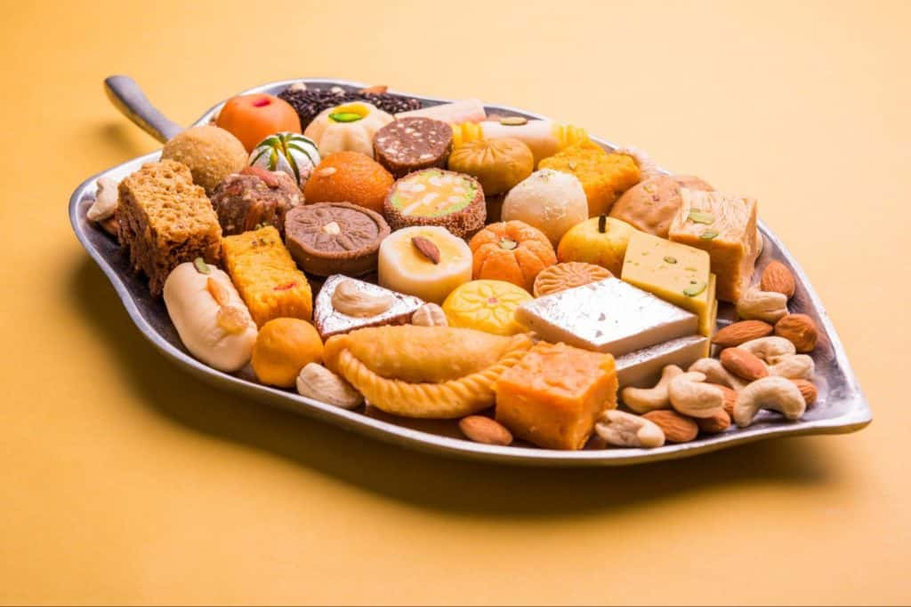
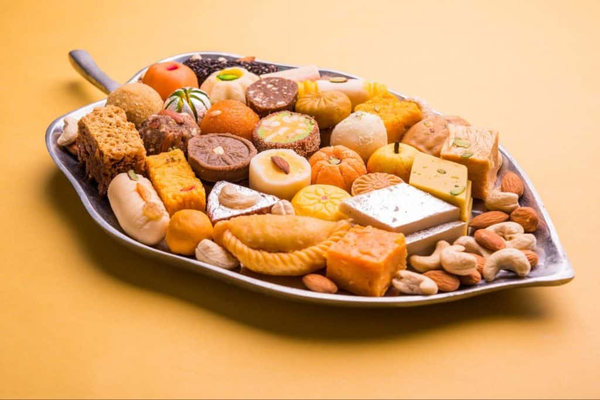

INDIAN BREADS
Breads in India are mostly flatbreads. It’s the cooking method or flour base that determines what they’re called.
Naan
Naan is one of the most popular Indian flatbreads. To makes nan, wheat flour dough is prepared either by allowing it to rise using yeast or by the addition of yogurt to the dough. That dough is then rolled into flatbreads and cooked in an Indian oven called a tandoor.
Roti
: Naan is popular on Indian restaurant menus, but roti is a staple in Indian homes. Roti is a no-fuss Indian bread, typically made with whole wheat flour that’s kneaded into a soft dough, then rolled into thin circles, and cooked on a tava (Indian skillet) on the stovetop.
Paratha
: Paratha is a flatbread that is layered and pan-fried. They are made with wheat flour, and ghee or oil is smeared between layers of dough while rolling them. But there are many ways in which you can make a paratha, especially stuffed paratha. In a stuffed paratha, the filling is stuffed into a ball of dough and then rolled into a flatbread.
Aloo Paratha
: With spicy potato filling
GObi Paratha
: With spicy cauliflower filling
Vegetable Paratha
: With a variety of vegetables stuffed
Poori
Poori is flat circles of dough that have been deep fried in ghee or oil until they puff and become slightly crispy on the outside. Typically served with aloo ki sabzi (curried potatoes) or chana masala (curried chickpeas), this is a beloved comfort food in northern India.
INDIAN MEALS
Tikka Masala
Tikka is the Hindi term for “small chunks,” and masala means a spice blend. So when small chunks of chicken are cooked in a sauce with a particular spice blend, it is called chicken tikka masala. When paneer comes to the play, it is called paneer tikka masala. The world-famous sauce used in tikka masala is mainly tomato-based, with some richness added by cream or thick yogurt.
Dal
Dal is the Hindi name for lentils, and it broadly refers to all lentil soups in Indian cuisine. Typically, the lentils are pressure-cooked with water and then mixed with onions, tomatoes, and a variety of spices (ginger, garlic, turmeric) to give more flavor to the dish.
Dal Makhni
2-3 varieties of lentils/beans cooked with spices and cream or butter added for richness. Makhni refers to the use of makhan (butter) or cream.
Tadka
Dal with a mild tempering of whole spices like cumin seeds, mustard seeds, etc.
Chana Dal
light and zesty Split Bengal lentil soup; this dish is much lighter than dal mahkni.
Dhaba Style Dal
Dhaba are roadside food joints by the freeways in India. The food served there is pretty popular because it is homestyle cooking, but with an extra amount of butter or cream! It’s so delicious and popular that the dal served in those dhabas somehow made their way into more upscale Indian restaurants.
biryani
A very popular Indian rice dish with its roots in the Mughal empire in India, biryani is a rice dish prepared with several layers of rice, some kind of spiced meat, paneer or vegetables, and some added richness with ghee or yogurt, and then finally slow cooked to perfection. It is topped with caramelized onions and saffron for a rich taste. There are a variety of options when it comes to biryani:
- chicken Biryani
- Hyderabadi Dum Biryani
- Goat Biryani
- Vegetable Biryani
- Paneer Biryani
INDIAN DRINK
Chai (Tea):
The Indian name for tea is chai. Chai is made by boiling black tea in water, then adding milk and sugar and bringing to a boil again before straining and serving. And yes, when you order a “Chai Tea Latte” at Starbucks, you’re ordering a “Tea Tea Latte.”
Masala Chai
This is when you add some kind of spice (masala) to the concoction above, and that makes it masala chai. Typical masala chai has a blend of cardamom, cinnamon, cloves, and ginger cooked in chai. While it’s regularly shortened to “chai” in cafés and coffee shops around the globe, masala chai is actually the beverage that many non-Indians have fallen in love with.
Lassi:
A sweet yogurt drink traditionally made by thinning out yogurt with milk or water and then sweetening it for more flavor. Cream is added to the drink too to make it richer. Lassi can be made into different flavors simply by adding various fruits, additional flavorings, etc. For example, mango lassi is made by mixing mango and yogurt, whereas strawberry lassi contains fresh strawberries, etc.
INDIAN DESSERTS
Gulab Jamun
If chicken tikka masala (or some might say butter chicken ) is the king of Indian curries, then gulab jamun is definitely the king of desserts. Milk powder and wheat flour are kneaded with milk to form a smooth dough. The dough is then rolled into small balls, deep fried, and dunked into sugar syrup until the balls absorb the syrup and become soft and juicy.
Halwa
Halwa is a pudding made with any variety of flour — like chickpea flour, wheat flour, semolina, or root vegetables — that’s cooked with sugar, ghee, and water/milk.
Gajar Halwa
Carrot pudding, made by cooking freshly grated carrots along with sugar, milk, and ghee.
Besan Halwa
Besan is the Hindi name for chickpea flour. This pudding is made by cooking chickpea flour in rich sugar syrup.
Mung Halwa
Made with mung bean flour